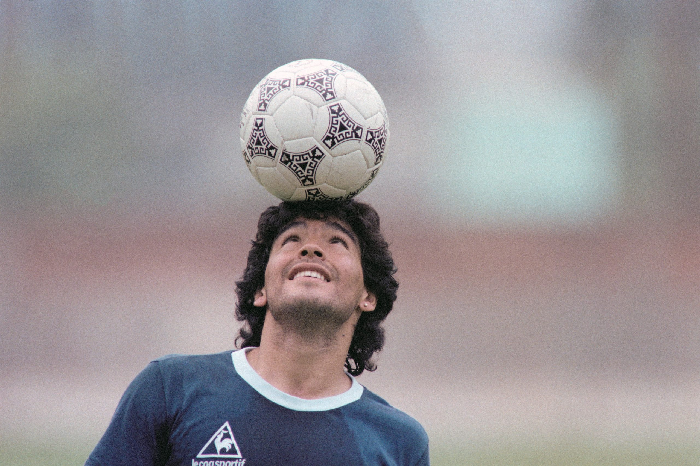

- 


Para mi las camras o en si la actividad de grabar es algo que me gusta hacer el de grabar a personas, objetos, lugares y hasta paisajes siempre me ha gustado ese tipo de actividad.
Siempre me la he pasado con mis audifonos, es una de mis grandes aficiones siempre que puedo hao las cosas con musica es lago que me relaja aunque no escucho la tipica el genero mas actual que he escuchado es el lo-fi hip-hop.
Otra de mis actividades favoritas los videojuegos todo empezo con una computadora y esos Lectores de DVD en los culaes podias jugar unos videojuegos, mi primera consola real fue un Nintendo Gamecube con la cual la pase bien de niño.
Para mi tambien algo que va relacionado con lo de grabar es la edición de videos es algo que siempre me ha llamado la atención y el cual se que puedo mejor mis videos que grabo o hasta poder mejorar la calidad de video.
De 16 años de edad, nacio en zona 1 de la ciudad de la capital, actualmente estudiante de Bachillerato de la carrera de Computación con algunas cuantas aficiones, esperando poder ser un programador y un buen estudiante.
Una habilidad que deseo adquirir es la de poder saber dibujar, como empezar con bocetos e ir dando forma al dibujo.

Otra de las que anhelo es la de poder saber bailar siempre me hace ilusión desde pequeño el saber bailar ya que actualmente no puedo.
La habilidad mas deseada es la de poder cantar ya que al momento que intento cantar no me sale una voz afinada, ya que por eso deseo tener una vos fina para poder cantar bien.